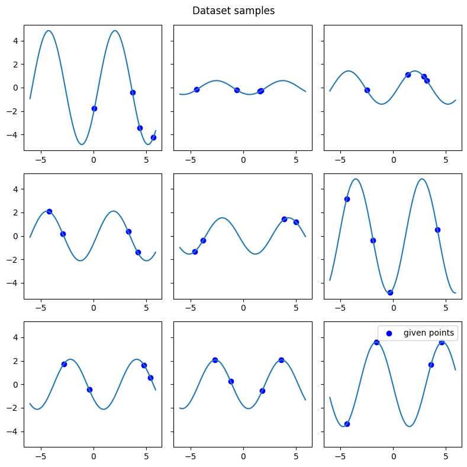
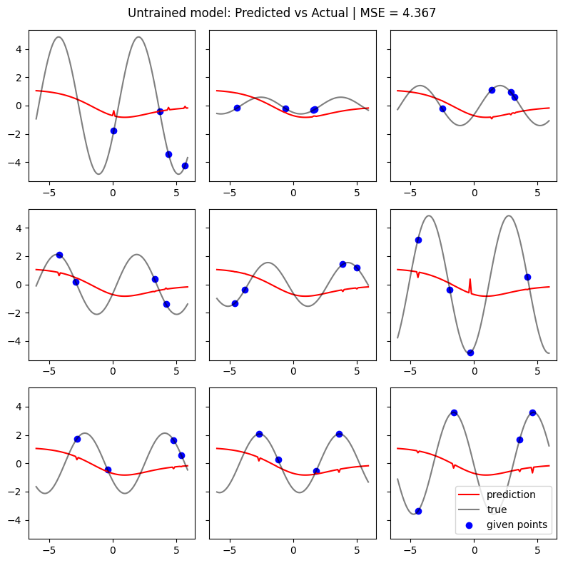
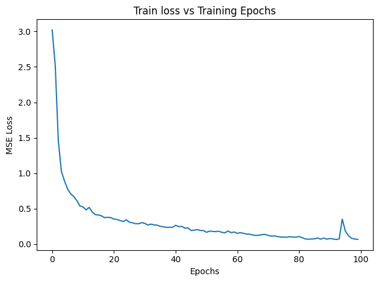
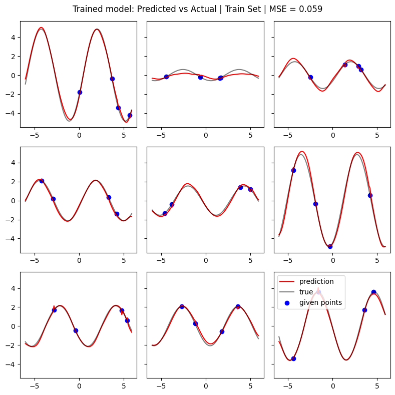
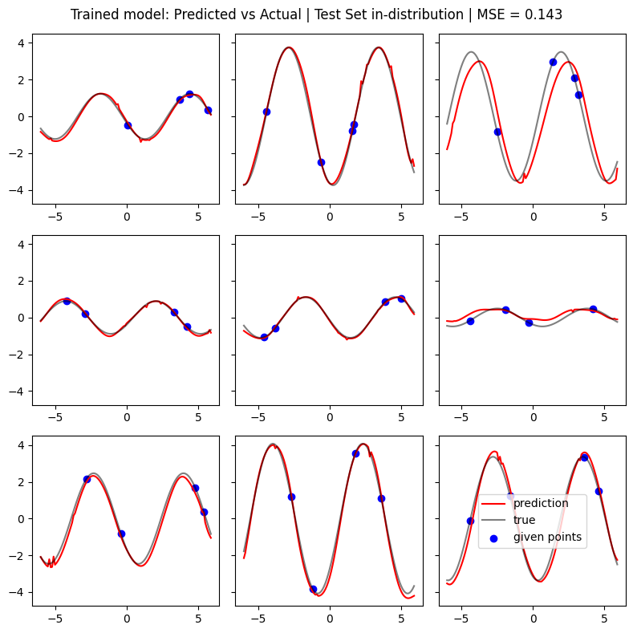
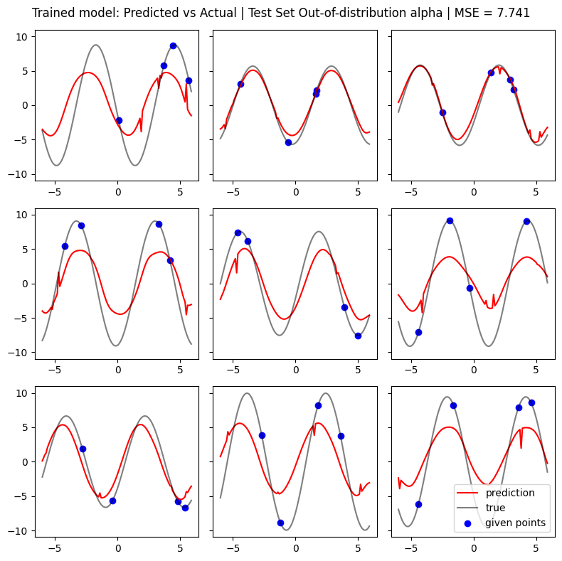
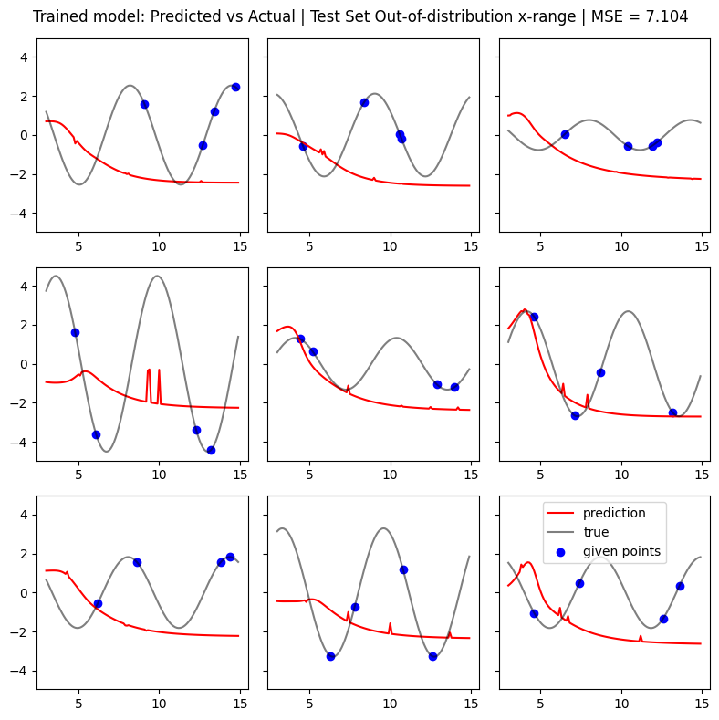

Functional Attention Experiments#
This is my implementation of Functional Attention published in ICML in 2026. I could not find all of the architecture details (number of attention blocks, choice of activation function) in the paper or its appendix. But I tried to replicate it given all the information I read in the paper.
TLDR#
I implemented Functional Attention based on the paper. I guessed a lot of the design decisions because they’re not metnioned in the paper, for example how many transformer blocks? What activation to use?
We tried to replicate the experiment in the paper, but on a smaller scale. I don’t have a lot of compute. The dataset is drawn from the same distribution defined in the paper, but the dataset size is much smaller here. The training iterations are also much smaller here compared to 50k iterations in the paper.
Results:
It’s able to learn the training dataset well. Alright, memorizing it in a way. But the cool thing is I only show 4 values of y for each function. All other values are learned by extrapolating from that. Which is pretty cool. So it can’t just memorize x -> y mapping in the training set. It needs to learn an underlying function.
I tested on a test set drawn from the same distribution as the training set. Performance isn’t great but okaish. Maybe it needs more training time.
But when it comes to predicting for out of distribution, it’s pretty bad. It cannot extrapolate beyond the support of the training set. Well, neural networks seem to be some glorified Taylor series approximators anyway.
Architecture#
We show below the architecture diagram

Below is a screenshot of the details of the sinusoidal regression task:

Experiment#
For this experiment, we randomly generated a training set of 1000 functions of \(f(x) = \alpha \sin(x-\gamma)\) for \(x \in [-6, 6]\), with parameters randomly sampled from uniform distributions:
\(\alpha \in [0.1, 5]\)
\(\gamma \in [0, \pi]\)
Then we only show 4 values of y as the context. Then the model needs to predict all the other y in the range of x.

We trained for 500 epochs.
We see that it performs well on the train set, as expected:

We first tested on a test set generated as another set of 1000 functions generated from the same ranges of parameters above.

We then tested on a test set generated from a different set of ranges to test out of distribution (OOD) generalization:
Case 1 OOD \(\alpha\):
\(\alpha \in [5, 10]\)
\(\gamma \in [0, \pi]\)

Case 2 OOD \(x\):
\(\alpha \in [0.1, 5]\)
\(\gamma \in [0, \pi]\)
\(x \in [-3, 15]\)

Implementation#
Functional Attention#
class FunctionalAttention(nn.Module):
def __init__(self,
d_model: int,
k_basis: int,
H: int, # heads
reg_lambda: float = 1e-4):
super().__init__()
self.d_model = d_model
self.k_basis = k_basis
self.reg_lambda = reg_lambda
self.H = H # heads
# feature projections
self.q_proj = nn.Linear(d_model, H * d_model)
self.k_proj = nn.Linear(d_model, H * d_model)
self.v_proj = nn.Linear(d_model, H * d_model)
# basis projections
self.q_basis_proj = nn.Linear(H * d_model, H * k_basis)
self.k_basis_proj = nn.Linear(H * d_model, H * k_basis)
# output layer to make same dim as x
self.output = nn.Linear(H * d_model, d_model)
def forward(self, x: torch.Tensor) -> torch.Tensor:
# x: (B, N, D)
B, N, D = x.shape
# linear feature projections -> (B, N, D)
q = self.q_proj(x)
k = self.k_proj(x)
v = self.v_proj(x)
# compute basis functions & normalize along basis dimension K -> (B, N, K)
phi_q = torch.softmax(self.q_basis_proj(q), dim=-1)
phi_k = torch.softmax(self.k_basis_proj(k), dim=-1)
# reshape to add 8 heads(B, N, D) -> (B, H, N, D_head)
q = q.reshape((B, N, self.H, self.d_model)).permute(0, 2, 1, 3)
k = k.reshape((B, N, self.H, self.d_model)).permute(0, 2, 1, 3)
v = v.reshape((B, N, self.H, self.d_model)).permute(0, 2, 1, 3)
# reshape to add 8 heads(B, N, K) -> (B, H, N, K_head)
# K_head = self.k_basis//self.H
phi_q = phi_q.reshape(B, N, self.H, self.k_basis).permute(0, 2, 1, 3)
phi_k = phi_k.reshape(B, N, self.H, self.k_basis).permute(0, 2, 1, 3)
# project feature vectors onto basis functions to get coefficients -> (B, H, K, D_head)
A = phi_q.transpose(-2, -1) @ q # source coefficients
B_coeff = phi_k.transpose(-2, -1) @ v # target coefficients
# compute regularized covariance matrix -> (B, H, K, K)
A_AT = A @ A.transpose(-2, -1)
reg_eye = torch.eye(self.k_basis, device=x.device) * self.reg_lambda
cov = A_AT + reg_eye
# colve for C via Least Squares: C = B_coeff @ A^T @ inv(cov) -> (B, H, K, K)
# The literal implementation:
# cov_inv = torch.linalg.inv(cov)
# A_T_cov_inv = A.transpose(-2, -1) @ cov_inv # (B, H, D_head, K)
# Supposedly a more efficient way to solve:
# torch.linalg.solve(cov, A).transpose() = (cov^-1 @ A).transpose = A^T @ cov^-1
# cov^-1 = (conv^-1)^T because cov is symmetric
A_T_cov_inv = torch.linalg.solve(cov, A).transpose(-2, -1) # (B, H, D_head, K)
C = B_coeff @ A_T_cov_inv # (B, H, K, K)
# transform source coefficients through functional operator C -> (B, H, K, D_head)
c_out = C @ A
# reconstruct spatial output signal Y -> (B, H, N, D_head)
out = phi_q @ c_out
# return to (B, N, D)
out = out.permute(0, 2, 1, 3) # (B, H, N, D_head) -> (B, N, H, D_head)
out = out.flatten(2) # (B, N, H, D_head) -> (B, N, D)
out = self.output(out)
return out
Transformer Block#
class FunctionalTransformerBlock(nn.Module):
def __init__(self,
d_model:int,
k_basis:int,
H:int,
ffn_hidden: int = 512,
reg_lambda: float = 1e-4
):
super().__init__()
# following the architecture in the paper
self.norm1 = nn.LayerNorm(d_model)
self.attn = FunctionalAttention(d_model, k_basis, H, reg_lambda)
self.norm2 = nn.LayerNorm(d_model)
self.ffn = nn.Sequential(
nn.Linear(d_model, ffn_hidden),
nn.GELU(),
nn.Linear(ffn_hidden, d_model)
)
def forward(self, x):
x_norm = self.norm1(x)
attn_out = self.attn(x)
add1 = x_norm + attn_out
add1_norm = self.norm2(add1)
ffn_out = self.ffn(add1_norm)
out = add1_norm + ffn_out
return out
Full Regression Model#
class SineWaveRegressionModel(nn.Module):
def __init__(self,
k_basis:int,
num_blocks: int = 2,
d_model:int = 128,
H:int = 8,
inf_features:int = 2,
ffn_hidden: int = 512,
reg_lambda: float = 1e-4
):
super().__init__()
# shared Key/Query Encoder: MLP(4, 128)
# GELU arbitrarily chosen
self.shared_kq_encoder = nn.Sequential(
nn.Linear(inf_features, d_model),
nn.GELU(),
# nn.ReLU(),
nn.Linear(d_model, d_model),
nn.GELU(),
# nn.ReLU(),
nn.Linear(d_model, d_model),
nn.GELU(),
# nn.ReLU(),
nn.Linear(d_model, d_model),
nn.GELU()
# nn.ReLU(),
)
self.transformer_stack = nn.ModuleList([
FunctionalTransformerBlock(d_model, k_basis, H, ffn_hidden, reg_lambda)
for _ in range(num_blocks)])
# final projection to get our 1D y pred
self.output_proj = nn.Linear(d_model, 1)
def forward(self, x):
x1 = self.shared_kq_encoder(x)
for block in self.transformer_stack:
x1 = block(x1)
out = self.output_proj(x1)
return out
Generate Data#
def generate_data(batch_size=3,
x_range=(-6, 6),
alpha_range=(.1, 5),
gamma_range = (0, np.pi)
):
# build the input X
x = torch.arange(x_range[0], x_range[1], step=0.1)
X = torch.zeros(size=(batch_size, len(x), 2))
Y_true = torch.zeros(size=(batch_size, len(x), 1))
Y_target = torch.zeros(size=(batch_size, len(x), 1))
batch_mask = torch.zeros(size=(batch_size, len(x), 1))
for b in range(batch_size):
alpha = np.random.uniform(alpha_range[0], alpha_range[1])
gamma = np.random.uniform(gamma_range[0], gamma_range[1])
x = torch.arange(x_range[0], x_range[1], step=0.1)
y_true = alpha * torch.sin(x - gamma)
# mask all ys as 0s except 4 random points
N = len(x)
mask = torch.zeros(N)
context_indices = torch.randperm(N)[:4]
mask[context_indices] = 1
y_masked = y_true * mask
X[b, :, 0] = x
X[b, :, 1] = y_masked
Y_true[b, :, 0] = y_true
Y_target[b, :, 0] = y_true * (1 - mask) # reverse mask
batch_mask[b, :, 0] = mask
return X, Y_true, batch_mask
X_train, Y_train, batch_mask_train = generate_data(
batch_size=1000,
x_range=(-6, 6),
alpha_range=(.1, 5),
gamma_range = (0, np.pi)
)
Show code cell source
fig, axs = plt.subplots(3, 3, figsize=(8, 8), sharey=True)
axs = axs.flatten()
for i, ax in zip(range(9), axs):
ax.plot(X_train[i, :, 0], Y_train[i].detach().numpy().flatten())
ax.scatter(X_train[i, :, 0].flatten()[batch_mask_train[i].flatten()==1],
Y_train[i].flatten()[batch_mask_train[i].flatten()==1], c='b', label='given points')
plt.suptitle(f"Dataset samples")
plt.legend()
plt.tight_layout()
plt.savefig("./images/functional_attention/sine_dataset.png")
plt.show()

Untrained Model Performance#
Show code cell source
criterion = nn.MSELoss()
model = SineWaveRegressionModel(k_basis=8)
Y_pred = model(X_train)
mse = criterion(Y_pred, Y_train)
fig, axs = plt.subplots(3, 3, figsize=(8, 8), sharey=True)
axs = axs.flatten()
for i, ax in zip(range(9), axs):
ax.plot(X_train[i, :, 0], Y_pred[i].detach().numpy().flatten(), color='r', label='prediction')
ax.plot(X_train[i, :, 0], Y_train[i], color='k', alpha=0.5, label='true')
ax.scatter(X_train[i, :, 0].flatten()[batch_mask_train[i].flatten()==1],
Y_train[i].flatten()[batch_mask_train[i].flatten()==1], c='b', label='given points')
plt.suptitle(f"Untrained model: Predicted vs Actual | MSE = {mse:.3f}")
plt.legend()
plt.tight_layout()
plt.savefig("./images/functional_attention/untrained_model_results.png")
plt.show()

Train Model#
# define dataset for helper functions like batching
from torch.utils.data import DataLoader, TensorDataset
train_dataset = TensorDataset(X_train, Y_train)
train_dataloader = DataLoader(train_dataset, batch_size=8, shuffle=True)
import torch.optim as optim
# In the paper: 50k iterations with batch size of 8
epochs = 100
model = SineWaveRegressionModel(k_basis=8, num_blocks=2)
model = model.to(device)
optimizer = optim.Adam(model.parameters(), lr=1e-4)
criterion = nn.MSELoss()
losses = []
for epoch in range(epochs):
loss_sum = 0
for x, y in train_dataloader:
x = x.to(device)
y = y.to(device)
predictions = model(x)
# # if we only compute the loss on the targets
# # this is not great - causes spikes along given y
# so we include targets in the MSE loss
# target_preds = predictions.flatten()[batch_mask_train.flatten()==0]
# target_true = Y_train.flatten()[batch_mask_train.flatten()==0]
loss = criterion(predictions, y)
# clear gradients
optimizer.zero_grad()
# new gradients
loss.backward()
# update model weights
optimizer.step()
# get loss sum
loss_sum += loss.cpu().detach().numpy()
losses += [loss_sum / len(train_dataloader)]
if epoch % 10 == 0:
print(loss)
# switch to eval mode
model.eval()
Show code cell source
plt.plot(range(epochs), losses)
plt.xlabel("Epochs")
plt.ylabel("MSE Loss")
plt.title("Train loss vs Training Epochs")
plt.tight_layout()

Show code cell source
Y_pred = model(X_train)
mse = criterion(Y_pred, Y_train)
fig, axs = plt.subplots(3, 3, figsize=(8, 8), sharey=True)
axs = axs.flatten()
for i, ax in zip(range(9), axs):
ax.plot(X_train[i, :, 0], Y_pred[i].detach().numpy().flatten(), color='r', label='prediction')
ax.plot(X_train[i, :, 0], Y_train[i], color='k', alpha=0.5, label='true')
ax.scatter(X_train[i, :, 0].flatten()[batch_mask_train[i].flatten()==1],
Y_train[i].flatten()[batch_mask_train[i].flatten()==1], c='b', label='given points')
plt.suptitle(f"Trained model: Predicted vs Actual | Train Set | MSE = {mse:.3f}")
plt.legend()
plt.tight_layout()
plt.savefig("./images/functional_attention/trained_model_train_set.png")
plt.show()

Show code cell source
# in-distribution
X_test, Y_test, batch_mask_test = generate_data(batch_size=1000,
x_range=(-6, 6),
alpha_range=(.1, 5),
gamma_range = (0, np.pi)
)
Y_pred = model(X_test)
mse = criterion(Y_pred, Y_test)
fig, axs = plt.subplots(3, 3, figsize=(8, 8), sharey=True)
axs = axs.flatten()
for i, ax in zip(range(9), axs):
ax.plot(X_test[i, :, 0], Y_pred[i].detach().numpy().flatten(), color='r', label='prediction')
ax.plot(X_test[i, :, 0], Y_test[i], color='k', alpha=0.5, label='true')
ax.scatter(X_test[i, :, 0].flatten()[batch_mask_train[i].flatten()==1],
Y_test[i].flatten()[batch_mask_train[i].flatten()==1], c='b', label='given points')
plt.suptitle(f"Trained model: Predicted vs Actual | Test Set in-distribution | MSE = {mse:.3f}")
plt.legend()
plt.tight_layout()
plt.savefig("./images/functional_attention/trained_model_test_set_in_dist.png")
plt.show()

Show code cell source
# out-of-distribution
X_test, Y_test, batch_mask_test = generate_data(batch_size=1000,
x_range=(-6, 6),
alpha_range=(5, 10),
gamma_range = (0, np.pi)
)
Y_pred = model(X_test)
mse = criterion(Y_pred, Y_test)
fig, axs = plt.subplots(3, 3, figsize=(8, 8), sharey=True)
axs = axs.flatten()
for i, ax in zip(range(9), axs):
ax.plot(X_test[i, :, 0], Y_pred[i].detach().numpy().flatten(), color='r', label='prediction')
ax.plot(X_test[i, :, 0], Y_test[i], color='k', alpha=0.5, label='true')
ax.scatter(X_test[i, :, 0].flatten()[batch_mask_train[i].flatten()==1],
Y_test[i].flatten()[batch_mask_train[i].flatten()==1], c='b', label='given points')
plt.suptitle(f"Trained model: Predicted vs Actual | Test Set Out-of-distribution alpha | MSE = {mse:.3f}")
plt.legend()
plt.tight_layout()
plt.savefig("./images/functional_attention/trained_model_test_set_ood_alpha.png")
plt.show()

Show code cell source
# out-of-distribution
X_test, Y_test, batch_mask_test = generate_data(batch_size=1000,
x_range=(3, 15),
alpha_range=(.1, 5),
gamma_range = (0, np.pi)
)
Y_pred = model(X_test)
mse = criterion(Y_pred, Y_test)
fig, axs = plt.subplots(3, 3, figsize=(8, 8), sharey=True)
axs = axs.flatten()
for i, ax in zip(range(9), axs):
ax.plot(X_test[i, :, 0], Y_pred[i].detach().numpy().flatten(), color='r', label='prediction')
ax.plot(X_test[i, :, 0], Y_test[i], color='k', alpha=0.5, label='true')
ax.scatter(X_test[i, :, 0].flatten()[batch_mask_train[i].flatten()==1],
Y_test[i].flatten()[batch_mask_train[i].flatten()==1], c='b', label='given points')
plt.suptitle(f"Trained model: Predicted vs Actual | Test Set Out-of-distribution x-range | MSE = {mse:.3f}")
plt.legend()
plt.tight_layout()
plt.savefig("./images/functional_attention/trained_model_test_set_ood_x.png")
plt.show()
